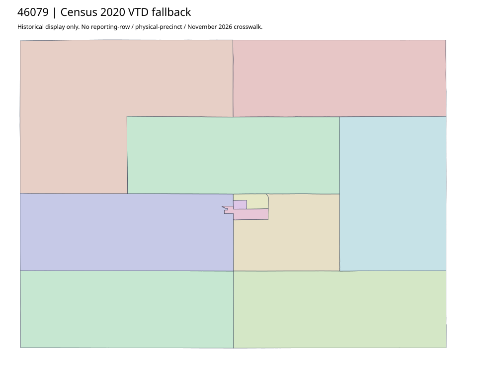

304 ordered indexLake | 46079
Official elections parent links two acquired complete scanned maps: Lake County and City of Madison. Original PDF text layers are empty; map labels are visual only. No source-supported effective date, native vector CRS or reporting/current crosswalk is established.
7 priority / 10 full historical observations. Parent is a summary ancestor, not additive to leaves. No physical feature matches or current reporting crosswalk approved.
Acquired shared-parent assets
map-46079-014-network | complete1-page PDF; all-page contact sheet; complete page1; complete original gzip. Exact reconstruction: python -B scripts/reconstruct.py --id map-46079-014-network /private/tmp/map.pdf
map-46079-015-network | complete1-page PDF; all-page contact sheet; complete page1; complete original gzip. Exact reconstruction: python -B scripts/reconstruct.py --id map-46079-015-network /private/tmp/map.pdf
Census2020 fallback
10 native historical VTD features. Entire785-feature ZIP original retained once, all66 counties. Yankton has one countywide VTD. No current/reporting allocation. complete original gzip

Full binary/attribute/geometry QA
Observed authority/acquisition routes
Complete SOS authority fields including original blank/masked values: parent inventory. No contacts were sent.
Ordered full children
- Ward One | 1334 source votes | priority
- Ward Three | 732 source votes | priority
- Ward Two | 715 source votes | priority
- Wentworth-Rutland | 602 source votes | priority
- Lakeview | 589 source votes | priority
- Chester-Franklin | 579 source votes | priority
- Herman-Winfred | 483 source votes | priority
- Farmington-Leroy-Clarno-Orland | 387 source votes | remainder
- Concord-Badus-Wayne/Ramona | 277 source votes | remainder
- Nunda-Summit | 208 source votes | remainder